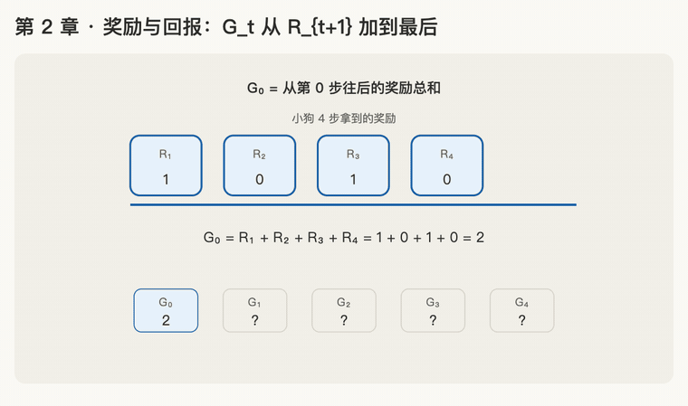

第 2 章 · 奖励与回报 reward & return：把一路的奖励加起来
本章回答：智能体的"目标"到底是什么？只看眼前这一步的奖励够不够？一局游戏怎么算总分？
讲解日期：2026-11-13 · 上一章：第 1 章 智能体与环境 · 下一章：第 3 章 折扣
对应原文：Sutton & Barto §3.2 Goals and Rewards（L3928–L3971）、§3.3 Returns and Episodes 前半（L3973–L4007，式 3.7）
本章缩写：\(G_t\)：G = Gain（收益），书里叫 return（回报）；\(T\) = Terminal time（结束的那一步）；\(R_{t+1}\) 见第 1 章。全部缩写见 附录 · 缩写与术语表
讲解
第一步：奖励只是一个数，目标是"长期加起来最多"（2026-11-13）
第 1 章说过，环境每一步给智能体一个奖励：就是一个普通的数，比如 1、0、−1。
智能体想要什么？ 原文 L3934–L3936：不是让眼前这一步的奖励最大，而是让长期累计的奖励最大。
类比：存钱罐。 小孩每天往存钱罐里投硬币，有时多有时少，有时还得拿出来一点（负数）。他关心的不是某一天投了多少，而是到年底罐子里一共有多少。
| 只看眼前（贪一时） | 看长期（攒总数） | |
|---|---|---|
| 下棋 | 能吃子就吃 | 为了赢，宁可先送一个子 |
| 小狗 | 乱跑很好玩 | 忍住坐下，零食更多 |
书里把这个想法叫奖励假设 reward hypothesis（L3938–L3940）：我们说的一切"目标"，都可以看成"让收到的奖励累计起来的期望最大"。（"期望"是第 4 章的词，现在先理解成"平均来看"。）
一句话：奖励是每一步的一个数；智能体的目标是让它们加起来最多，而不是某一步最多。
第二步：回报 \(G_t\)：从下一步加到最后（2026-11-13）
把"加起来"写成符号。第 t 步之后会陆续拿到 \(R_{t+1}, R_{t+2}, R_{t+3}, \dots\)，把它们一路加到最后一步 \(T\)，叫回报 return，记作 \(G_t\)（式 3.7，L3985）：
每个符号怎么读：
- \(G_t\)："G 下标 t"：从第 t 步往后能拿到的奖励总和；
- \(R_{t+1}\)：第 t 步动作换来的那个奖励（第 1 章：奖励下标大一号）；
- \(T\)：最后一步的编号，一局到这里结束。
注意起点：\(G_t\) 不含第 t 步之前的奖励，只看"从现在往后"。已经拿到手的不算，未来的才算。
用小狗算一遍：小狗玩 4 步，奖励是 \(R_1 = 1, R_2 = 0, R_3 = 1, R_4 = 0\)，\(T = 4\)。
| \(G_t\) | 加哪些 | 结果 |
|---|---|---|
| \(G_0\) | \(R_1 + R_2 + R_3 + R_4 = 1 + 0 + 1 + 0\) | 2 |
| \(G_1\) | \(R_2 + R_3 + R_4 = 0 + 1 + 0\) | 1 |
| \(G_2\) | \(R_3 + R_4 = 1 + 0\) | 1 |
| \(G_3\) | \(R_4 = 0\) | 0 |
| \(G_4\) | 后面没有奖励了 | 0 |
最后一行：走到最后一步之后，后面什么都没有，所以 \(G_T = 0\)。
一句话：\(G_t\) 是"从第 t 步往后"的奖励总和，起点是 \(R_{t+1}\)，到最后一步 \(T\) 为止。
第三步：一局一局玩：分幕任务和终止状态（2026-11-13）
一局 在书里叫 episode（幕，也常译作回合）（L3990–L3992）：一盘棋、一次走迷宫、一局游戏。一局结束时进入一个特殊的终止状态 terminal state，然后重置，开始下一局。
分幕任务 episodic task：能自然切成一局一局的任务。
| 任务 | 一局是什么 | 结束在哪 |
|---|---|---|
| 下棋 | 一盘棋 | 分出胜负或和棋 |
| 走迷宫 | 从入口到出口 | 走出去 |
| 小狗训练 | 一次训练课 | 下课 |
另一种是持续任务 continuing task（L4002–L4005）：没有终点，一直进行下去，比如一台一直开着的空调控制器。这种任务按式 3.7 一直加下去，总数可能变成无穷大（每步都 +1，加无穷多步），没法比较谁好谁坏。第 3 章用"打折"来解决。
一句话：能切成一局一局的叫分幕任务，一局结束于终止状态；没完没了的叫持续任务，回报可能加到无穷大。
第四步：奖励要说"要什么"，别说"怎么做"（2026-11-13）
奖励是你告诉智能体你想要什么的唯一方式。原文举了两个例子：
例 1：走迷宫，每一步给 −1（L3947–L3949）。走出去这一局就结束。
| 走法 | 奖励 | 回报 \(G_0\) |
|---|---|---|
| 5 步走出去 | −1, −1, −1, −1, −1 | −5 |
| 8 步走出去 | 8 个 −1 | −8 |
−5 比 −8 大，所以"每步 −1"就是在说"越快出去越好"，不用另外告诉它怎么走。
例 2：下棋，只在赢的时候给 +1（L3953–L3954，L3965–L3971）。如果你自作聪明，"吃对方一个子"也奖励，智能体可能学会拼命吃子、却输掉整盘棋。原文 L3970–L3971 的总结：奖励信号是用来告诉智能体要达到什么，而不是怎么去达到。
类比：给员工定考核。 只考核"打了多少电话"，员工就会拼命打没用的电话；考核"签了多少单"才是你真正要的。
一句话：奖励只奖励最终想要的结果；奖励中间步骤，智能体会钻空子。
动画演示：一局走完，从后往前看每一步的回报

可交互版：animations/l02-return.html（要能点按钮、拖滑块，需要用本地服务打开，见 animations/README.md"跑起来看"）。
怎么看：
- 上面一排是小狗 4 步拿到的奖励 \(R_1 \dots R_4\)（第二步的例子）；
- 每一帧把 \(G_t\) 要加的那几个奖励框起来，下面写出加法；
- 滑块选 t，看 \(G_t\) 从 \(R_{t+1}\) 开始加，前面的奖励不算；
- 最后一帧是迷宫：每步 −1，走得越少回报越大。
练习与作答记录
题 1：一局 3 步，奖励 \(R_1 = 2, R_2 = -1, R_3 = 5\)。分别算 \(G_0\)、\(G_1\)、\(G_2\)、\(G_3\)。
作答：（待作答）
题 2：为什么 \(G_1\) 里没有 \(R_1\)？用"从现在往后"这句话解释。
作答：（待作答）
题 3：你想训练扫地机器人"把地扫干净"。下面两种奖励，哪一种更符合第四步的原则？为什么？ (a) 每吸到一粒灰尘 +1；(b) 房间检查合格时 +10，其余 0。
作答：（待作答）
口诀
奖励是一个数，目标是加总数；
\(G_t\) 从下一步加到底，已经拿到的不算；
一局一局叫分幕，没完没了叫持续；
奖励说要什么，别说怎么做。
本章复习卡片
- R03（回报 \(G_t\) 的定义；从 \(R_{t+1}\) 加到 \(R_T\)；\(G_T = 0\)）
- R04（分幕任务 vs 持续任务；为什么奖励不该奖励中间步骤）
附录 · 延伸阅读
留给以后深入学习用，不影响本章主线。★ 是建议先读的。L 行号指
materials/text/books/sutton-barto-RLbook2020.txt。
推荐阅读
| 读什么 | 读哪里 | 读它为了什么 |
|---|---|---|
| ★ Sutton & Barto §3.2 | L3928–L3971 | 奖励假设、迷宫 −1、下棋只奖励赢（第一步、第四步） |
| ★ Sutton & Barto §3.3 前半 | L3973–L4007（式 3.7） | 回报、episode、终止状态、持续任务（第二、三步） |
| Sutton & Barto 习题 3.7 | L4134–L4141 | 迷宫只在出去时给 +1、不打折会怎样：学完第 3 章再做 |
| Sutton & Barto §17.4 Designing Reward Signals | L34005 起 | 奖励怎么设计（reward shaping），想深入再读 |
| CS 285 第 4 讲 | lec-04.txt L69–L74（Defining the objective） |
课程版：目标是长期奖励，"等快撞上了才刹车就晚了" |
数学原理
- 求和记号：\(G_t = \sum_{k=t+1}^{T} R_k\)，读作"k 从 t+1 加到 T，把 \(R_k\) 都加起来"（Σ 在 Transformer 讲义第 2 章见过）。
- 递推的苗头：\(G_t = R_{t+1} + G_{t+1}\)：今天往后的总数 = 明天拿的 + 明天往后的总数。第 3 章加上折扣后正式讲。
- 持续任务会发散：每步 +1、加无穷多步，\(1 + 1 + 1 + \cdots = \infty\)。
公式清单
| 公式 | 意思 |
|---|---|
| \(G_t = R_{t+1} + R_{t+2} + \cdots + R_T\) | 回报（式 3.7） |
| \(G_T = 0\) | 最后一步之后没有奖励 |
| \(G_t = R_{t+1} + G_{t+1}\) | 后一步的回报加上眼前的奖励（第 3 章加 γ） |
代码对照：把本章的数字用代码算一遍
代码在
cs285-deep-rl/solutions/chapter-code/ch02_return.py，测试tests/test_ch01_04.py。
同一章的 Jupyter notebook：cs285-deep-rl/solutions/chapter-code/notebooks/ch02_return.ipynb（讲解和代码放在一起，一格一格边读边跑；代码都写在格子里，Colab 也能直接打开）。
bash cd cs285-deep-rl/solutions/chapter-code uv run python ch02_return.py
| 讲义 | 代码 | 跑出来 |
|---|---|---|
| 小狗 \(G_0 \dots G_4\) | all_returns([1, 0, 1, 0]) |
[2, 1, 1, 0, 0] |
| 迷宫 5 步 / 8 步 | episode_return([-1] * 5) |
−5 / −8 |
关键几行：
def episode_return(rewards, t=0):
return sum(rewards[t:]) # rewards[0] 是 R_1，G_t 从 R_{t+1} 加到最后
[episode_return(rewards, t) for t in range(len(rewards) + 1)] # 最后一个是 G_T = 0
代码里才看得到的：Python 列表下标从 0 开始，所以 rewards[0] 存的是 \(R_1\)。episode_return(rewards, t) 写成 sum(rewards[t:])：\(G_t\) 从 \(R_{t+1}\) 开始，正好对应 rewards[t]。讲义的下标和代码的下标差 1，这是 RL 代码里最常见的错位。
自己改一改（不影响练习答案）：
all_returns([0, 0, 0, 10])→[10, 10, 10, 10, 0]：奖励只在最后一步给，前面每一步的回报也都是 10。all_returns([1] * 4)→[4, 3, 2, 1, 0]：每步都有奖励时，越往后剩下的越少。